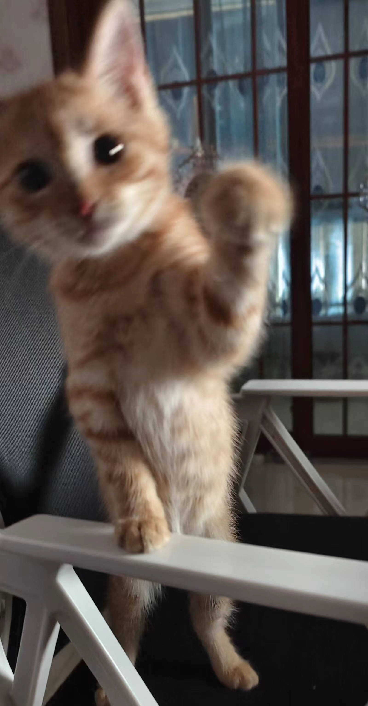
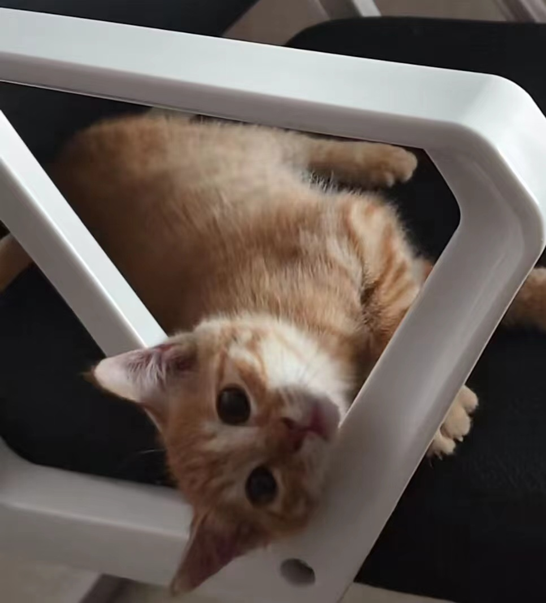

| 姓名： | 魏玉文 |
| 性别： | 男 |
| 出生日期： | 2004/2/14 |
| 籍贯： | 青海 |
| 联系电话： | 13007746028 |
你好，欢迎来到我制作的网页，希望你可以从这个网页大概了解到一些关于我的信息。 我叫魏玉文，很高兴有机会在这里与大家相识。我来自青海贵德，一个充满活力和文化底蕴的小县城。我对于学习和新知识始终保持着极大的热情和好奇心。 在我的学习生涯中，我主修的是信息安全专业，这个领域深厚的理论知识和实践经验都让我受益匪浅。除了课堂学习，我也热衷于参与各种实践活动和社团活动， 这些经历不仅锻炼了我的团队协作能力，也提升了我的问题解决能力。在性格方面，我乐观开朗，积极进取。面对困难和挑战时，我总能保持冷静， 迅速找到解决问题的办法。同时，我也非常重视自我提升和不断学习，我相信只有不断进步，才能在竞争激烈的社会中立足。在业余时间，我喜欢阅读、旅行和参加各种社交活动。 阅读让我能够不断拓宽视野，旅行则让我体验不同的文化和生活方式，而社交活动则 让我结交了许多志同道合的朋友。 我有许多兴趣爱好，样样通，样样松。如果你有兴趣和我做朋友，我会很高兴。^-^
这是我养的第一只猫，叫做小黄，是我姐送给我的。记得当时我只说了一句“一个人每天好无聊，好想养一只宠物”，我姐就立马带我到她同学家里领养了它， 它陪我度过了一段很有趣的时光，那段时光很有趣，很放松。
 